RSA BRICKWORK & CONSTRUCTIONYour project is our business
Project Gallery
Just a small selection of the many projects RSA Brickwork & Construction has worked on – from extensions and structural work through to walls and landscaping.
For the latest jobs and day‑to‑day site photos, follow us on Instagram and Facebook from the links on the home page.
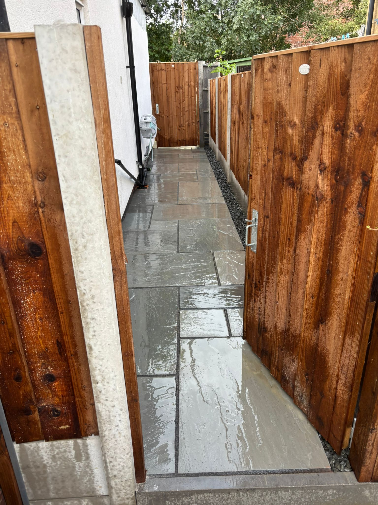
High-end brickwork and entrance pillars on a new build property.
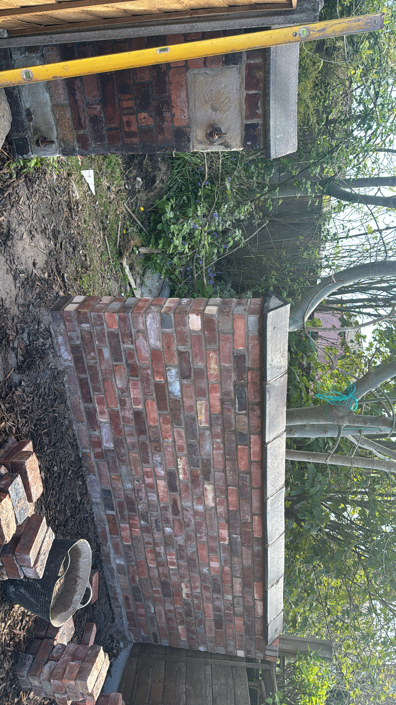
New brick porch being constructed to match the existing house.
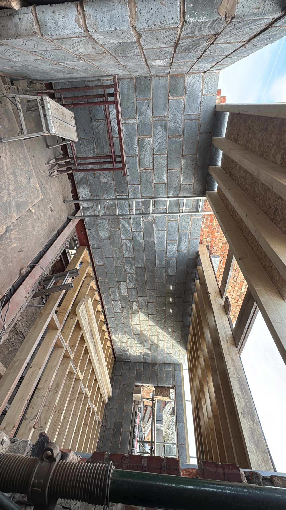
Internal steel work and joists installed for an extension.
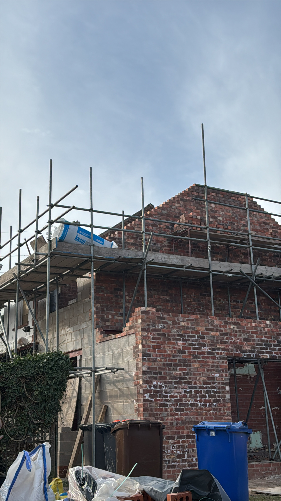
Completed porch and entrance brickwork with new door and paving.Commercial brickwork and ramp with smart dark brick detailing.High-end kitchen extension with roof lantern and full-width glazing.
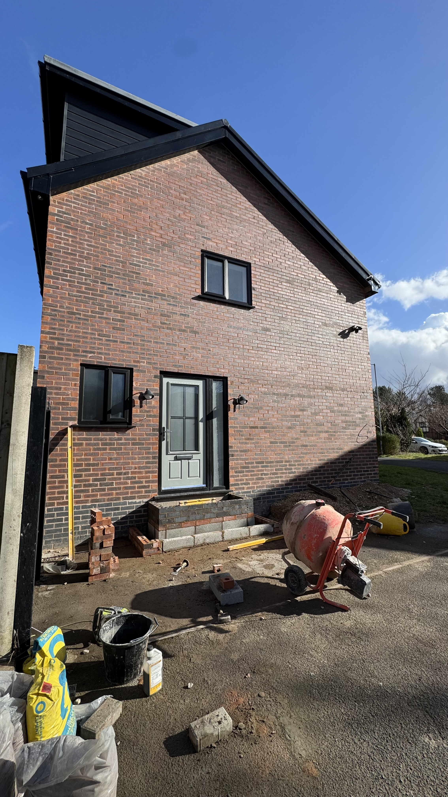
Extension foundations and brickwork prepared ready for the build.
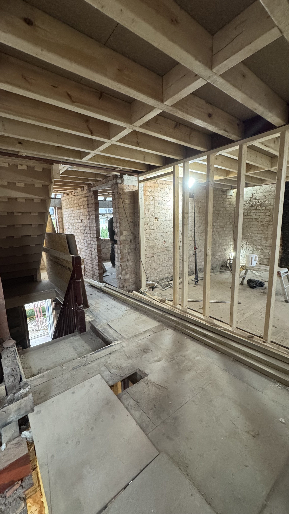
Steel installation and brickwork forming a wide opening to the garden.Blockwork extension on new foundations, ready for brick facing.
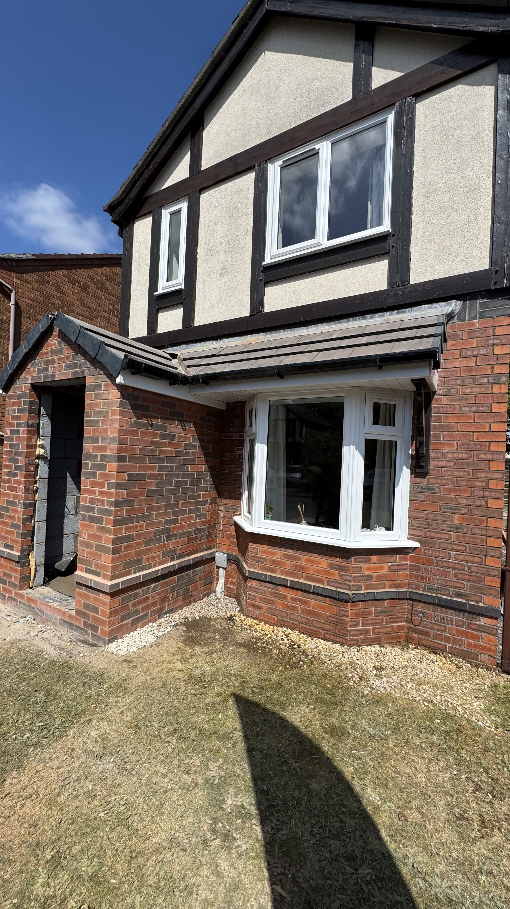
Two-storey brick extension tied neatly into an existing property.
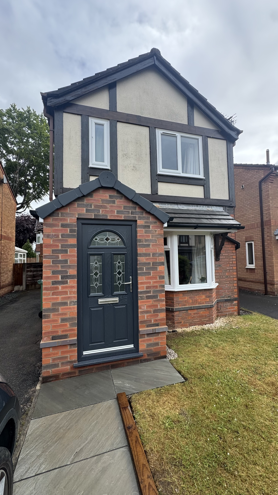
Garage opening formed with clean brick reveals ready for doors.
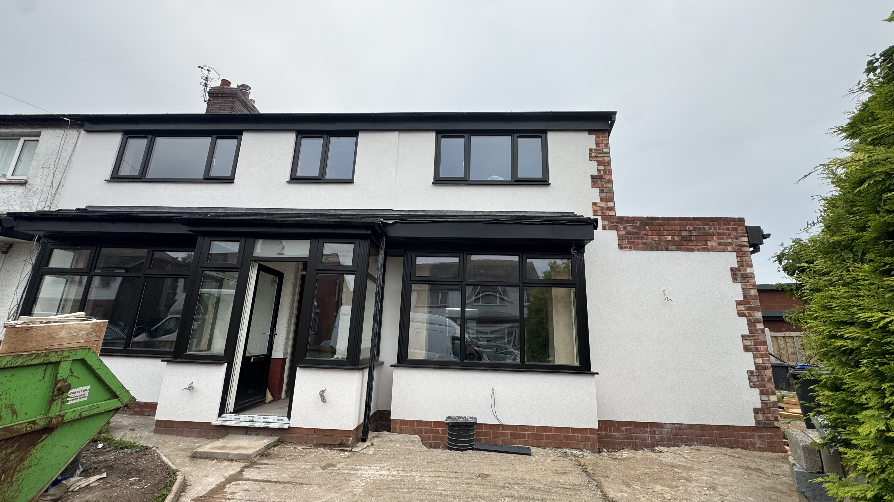
Close-up of neat, plumb brickwork showing accurate corners and joints.
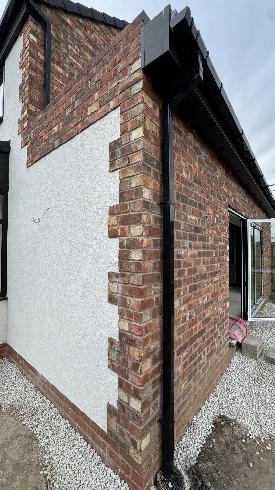
Roof structure and joists installed as part of an upper extension.Two-storey rear extension blending with the original brickwork.
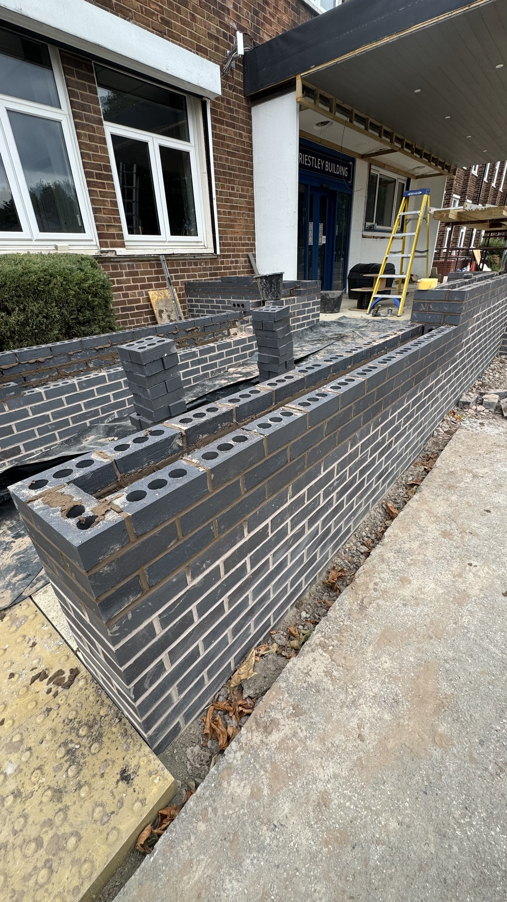
New patio and raised beds as part of a full garden landscaping project.
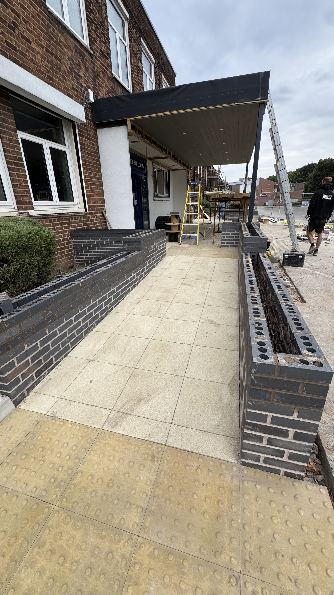
Chimney and wall repointing, restoring older brickwork safely.
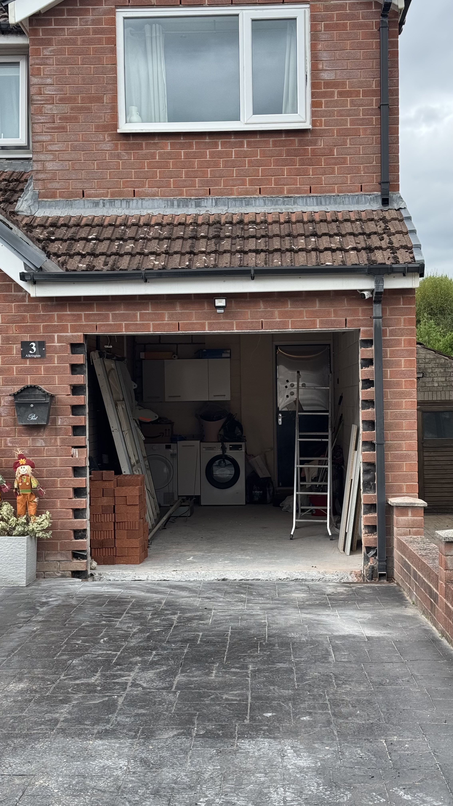
Modern rear extension with black-framed glazing and garden steps.Garden wall and coping stones providing privacy and character.Rear extension with large doors opening out to the garden.
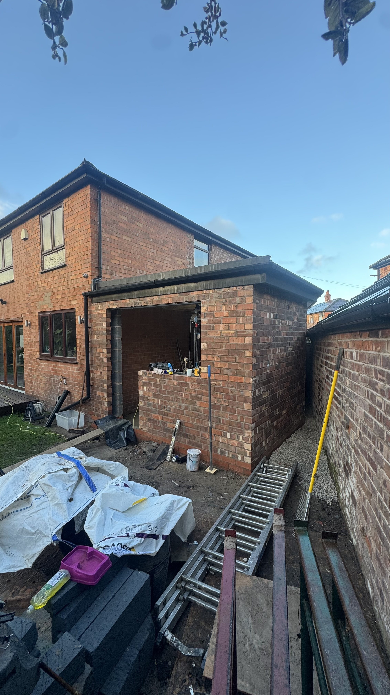
Brick and stone steps providing safe access to an elevated garden.Brick base and paving for a conservatory-style extension.Extension with feature brick detailing and matching roofline.
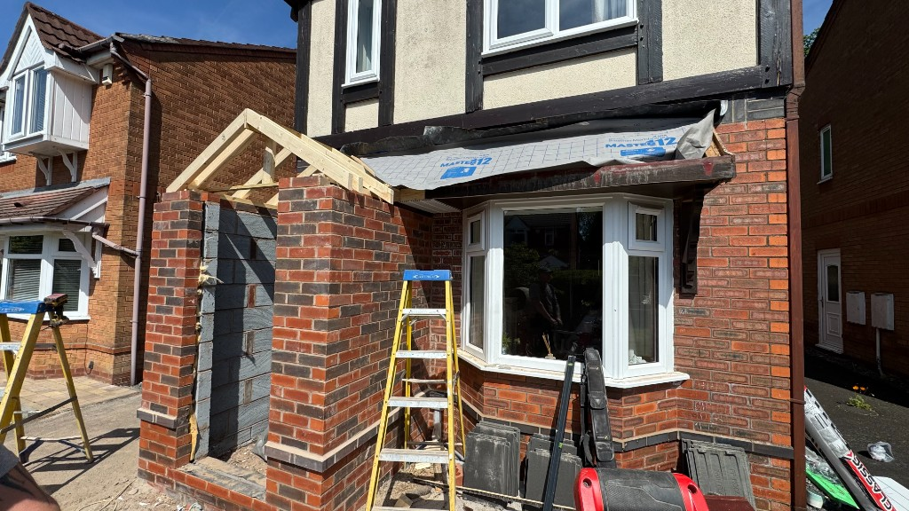
Large rear extension with full-height glazing and raised brickwork terrace.
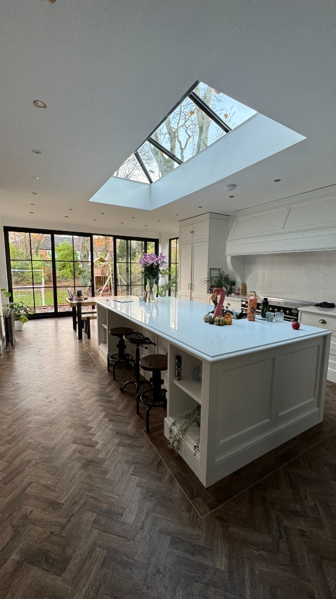
Fresh patio and sleeper beds to transform a garden space.